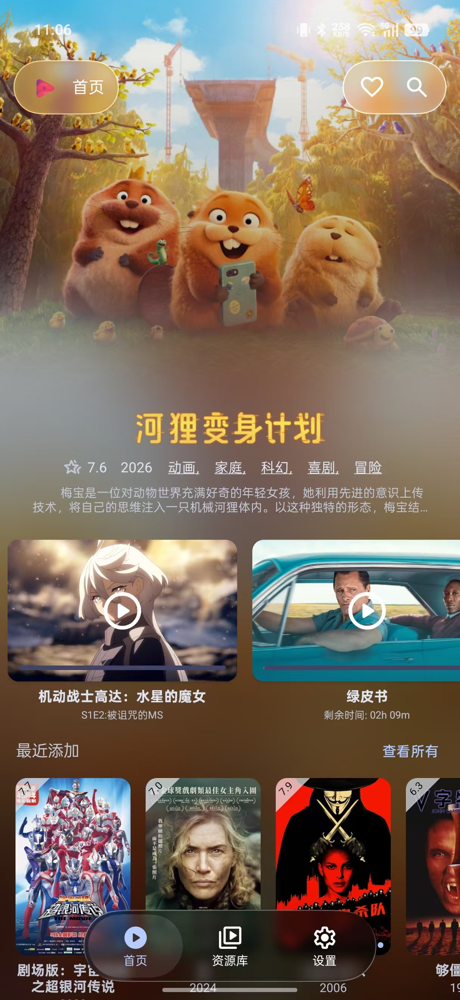

从零搭建专属家庭影院：AfuseKt 上手实战全流程
不想再被各种影视 App 的广告和片源限制折腾？跟着这篇教程，用 AfuseKt 把你手上的网盘/WebDAV 资源变成一个有海报墙、能刮削、跨设备同步的私人影院。
这篇教程结束时，你手里的 Android 手机上会跑着一个海报墙漂漂亮亮、能搜能播、还能和电视联动的AfuseKt官网——全程不装多余的东西，不写一行代码。
准备：先把几个前提捋清楚
在动手之前，花 3 分钟确认这几件事，能帮你避开一半的坑。
平台要求：AfuseKt 手机端最低 Android 8.1，TV 端（AfuseKtV）低至 Android 6.0——绝大多数近年的手机和电视盒子都能跑。如果你手上有老款盒子（比如小米盒子 3 代），建议直接装手机端先用着，等换了新盒子再上 TV 端。
版本选择：免费版 vs 永久 PRO。免费版覆盖了全部 11 种协议的资源库添加、三核心播放器切换（MPV / VLC / EXO）、海报墙浏览和聚合搜索——够你把手机端用得很顺手。PRO 是一次性付费，解锁 TV 端使用权、跨设备资源库同步和多服务版本搜索。刚开始先用免费版，等你确定要搭配电视端一起用再升级也不迟。
前置条件：你至少要有一个可访问的影视资源源。AfuseKt 支持 Alist、WebDAV、SMB、Emby、阿里云盘等 11 种协议——如果你只有本地视频文件，也可以直接扫手机本地 / SDCard，不依赖任何网络服务。

第一步：安装与注册
AfuseKt 不在 Google Play 上架，安装包从官方下载拿。拿到 APK 之后直接装——Android 8+ 首次安装外部应用会弹权限提示，允许即可。
打开 App，第一眼看到的是登录界面。点邮箱注册，填一个常用邮箱和密码，收到验证码确认就能进主界面了。免费版注册即使用，没有试用期限制。
如果你后面打算上 TV 端，现在就先注册好手机端账号——TV 端没有独立注册入口，完全依赖手机端同步配置过去。
第二步：添加你的第一个资源库
进主界面之后，左滑调出侧栏，点「资源库」→「添加资源库」。这里有 11 种协议可选，最常用的是 Alist 和 WebDAV。
选 Alist 的话，你需要准备好 Alist 服务的地址（比如 https://你的alist域名）、用户名和密码。填进去之后点「测试连接」，如果弹出绿色的「连接成功」，直接确定就行。如果失败，先检查地址有没有写错（尤其注意 https:// 和末尾斜杠），再确认 Alist 那边是否开启了 API 访问。
选 WebDAV 的同理，填 URL、用户名、密码，测试通过就好。SMB 适合局域网共享文件夹的场景——比如你家 NAS 上开了 SMB，直接扫局域网就能找到，不用手动填 IP。

资源库加完之后，AfuseKt 会自动开始扫库——根据文件名匹配 TMDB 数据、下载海报和简介。这个过程叫刮削，后面会详细讲。你现在可以切去喝口水，小资源库 10 分钟以内就能出结果，大的可能要半小时到一小时。
第三步：刮削海报墙，让资源不再是一堆文件名
扫库结束回到首页，如果一切顺利，你看到的应该是一张张带海报、评分、类型标签的卡片，而不是一堆杂乱的文件名。如果还是文件名，或者识别错了，这里有两个工具帮你救回来。
自动匹配失败时，用手动 TMDB ID 兜底。 长按识别错的那个文件 → 更多 → 手动刮削。你可以直接去 TMDB 官网搜这部电影/剧集，地址栏里的数字就是它的 TMDB ID（比如 /movie/27205 里的 27205 是《盗梦空间》）。把这个 ID 粘进来确认，AfuseKt 立即拉取正确的海报和元数据。文件夹级设置一次 TMDB ID，可以批量修正里面所有剧集，比逐个文件改效率高得多。
首页展示模式切换。 刮削完之后在设置里可以切换三种首页布局：海报墙（默认，纵向滚动）、栏目模式（横向滑动的「最近更新」「热门推荐」条）、轮播主题模式（PRO 专属，顶部大图轮播 + 下方栏目）。建议先用栏目模式，想看新片直接横向滑「最近更新」，找老片从海报墙往下翻——比纯海报墙效率高。首页布局和刮削源的高级配置，在afusekt文档里有更细的参数表。
第四步：开始播放——三核心怎么选
点开一张海报进入详情页，底部有个播放按钮。这里有个新手容易踩的小细节：直接点播放按钮走默认核心（通常是 EXO），长按播放按钮才会弹出 MPV / VLC / EXO 三核心选择面板。
三个核心各有优劣：
- EXO：Google 官方做的，Android 原生适配最好，发热最少。建议作为日常默认。
- MPV：兼容性最强，一些 EXO 播不了的编码格式 MPV 能搞定。但性能开销大，老手机容易发热。
- VLC：老机器的兜底选项，功能全但 UI 比较糙。
播放界面的手势也顺便说一下：双击暂停/播放，左右滑动快进快退（默认 ±10 秒，可在设置里调），左侧上下滑动调亮度，右侧上下滑动调音量。右下角菜单里可以切换字幕、音轨和倍速（1x ~ 3x）。
常见卡点：新手最容易翻车的三个地方
卡点一：刮削识别成了另一部同名电影。 《蝙蝠侠》1989、2005、2022 三个版本重名，自动匹配经常错。解法就是第三步说的手动 TMDB ID——去 TMDB 官网搜你那个年份的版本，把 ID 粘过来就行。如果 TMDB 上根本搜不到（比如冷门国产老剧），那就只能接受文件名展示了，AfuseKt 目前主要用 TMDB 这一个刮削源。
卡点二：Alist 连接成功但扫不出内容。 90% 的情况是 Alist 那边没开「公开访问」或者路径权限没给。回到 Alist 后台检查对应目录的权限配置——AfuseKt 需要只读权限就能正常扫库。
卡点三：TV 端装了但资源库同步不过去。 先确认你的手机端账号是 PRO 激活状态。然后在手机端侧栏「设置」→「账户与同步」里打开「资源库自动同步」，等几分钟 TV 端的 AfuseKtV 会自动拉取过来。TV 端本身不能手动添加资源库——设计上就是让手机端负责配置、TV 端负责纯播放。
进阶一句话
跑通上面四步之后，你可以考虑把手机端的配置推送到 AfuseKtV 上，遥控器按方向键直接在大电视上划海报墙——旗舰盒子用 EXO 默认核心 + MPV 备用、焦点动画开、海报选特大号，体验会让你觉得之前在手机上看都是浪费。写这篇教程时对照的软件目录，在 GitHub、Gitee 和 GitCode 上都能找到，国内访问走 Gitee 或 GitCode 更快。